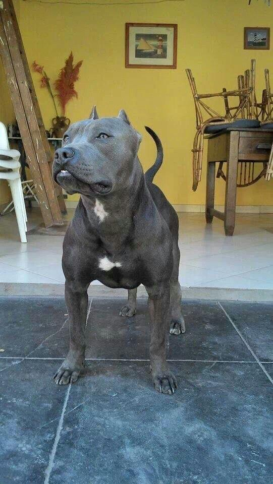
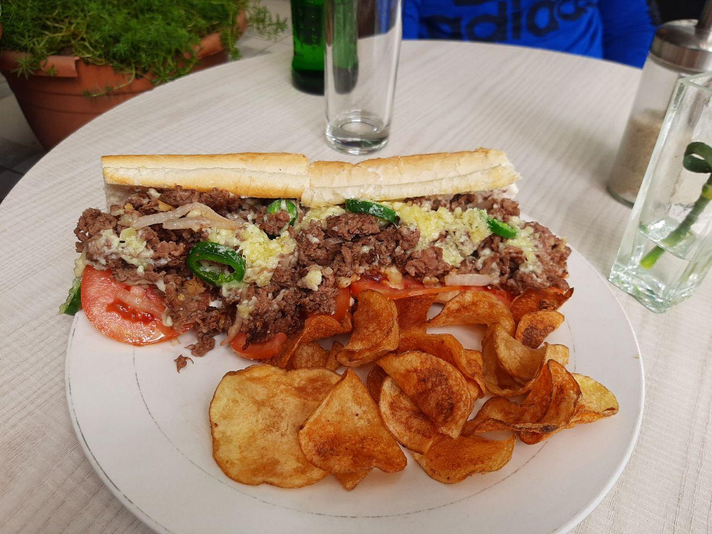
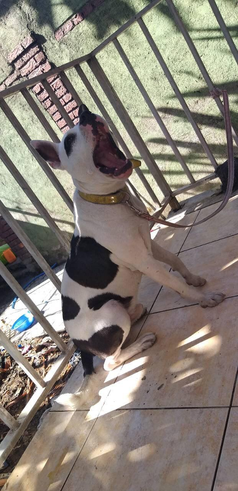

biniteklu487@gmail.com
+251968053480
Ethiopia , Addis Ababa
Hey there it's me Gedle K. am student at Addis Ababa Unverstiy a second year student.
I grew up in Addis with my family's. Have one sister her name is meron she is my two year elder she learn in mekelle Unverstiy urban Arctecture.
Eating food makes me happy don't want any trouble or work while am eating. Most of the time i spend my time doing my home work and helping my family's specially my father because he is sick of diabetics.
oh , and here's life via telegram
  